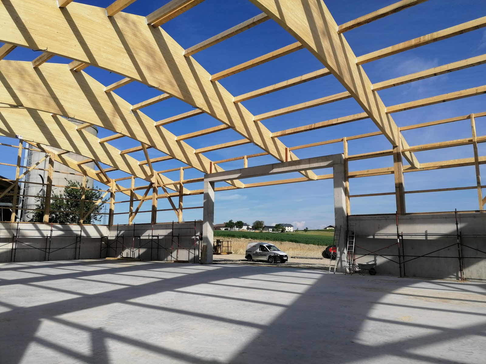
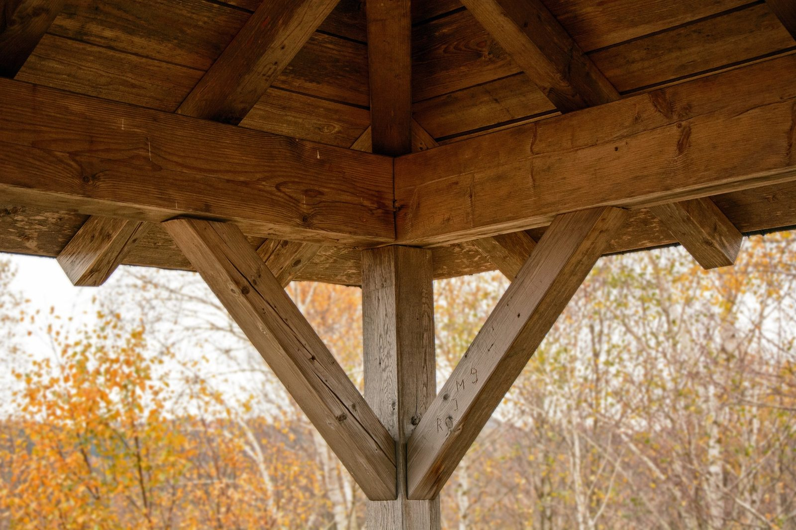

Holzbau
Holzbau braucht Spezialisten. Wir erstellen mit unserem Fachwissen den perfekten Plan für Ihr Vorhaben und setzen diesen fachgerecht um.
Seit 1922 · Industriezeile 17 · Braunau am Inn
Sie suchen einen Dachdecker mit Erfahrung in Klein- und Großprojekten? Als Meisterbetrieb für Holzbau, Dachdeckerei und Spenglerei planen wir Ihr Vorhaben gemeinsam mit Ihnen – und setzen es zuverlässig um.
Uttenthaler GmbH – Ihr Spezialist für Neubau und Sanierung
Seit mehr als 100 Jahren bieten wir kompetente Beratung und fachgerechte Ausführung für Dachdeckerei, Spenglerei und Holzbau. Von der Dachrinne bis zur Fassadenverkleidung – vom Steildach bis zum Flachdach. Mit uns an Ihrer Seite gelingt jedes Vorhaben.
Holzbau braucht Spezialisten. Wir erstellen mit unserem Fachwissen den perfekten Plan für Ihr Vorhaben und setzen diesen fachgerecht um.

Wir planen mit Ihnen die perfekte Bedachung. Ob Sattel-, Walm- oder Flachdach – gemeinsam finden wir die passende Lösung für Ihr Haus.

Ihnen fehlt noch die richtige Dachverblechung? Egal ob Dachrinne, Ablaufrohr oder Ortgang – wir fertigen alles nach Maß.

Ihr Dach ist in die Jahre gekommen? Egal ob kleine Reparaturen oder eine Komplettsanierung – für uns ist kein Auftrag zu klein und keiner zu groß.
Reparatur & Service
Egal ob kleinere Reparaturen oder eine Komplettsanierung: Für uns ist kein Auftrag zu klein und keiner zu groß. Wir schauen uns den Bestand vor Ort an, benennen den Handlungsbedarf und legen ein nachvollziehbares Angebot vor.

Seit 1922
Aus der Huf- und Wagenschmiede Bauchinger wurde eine Bauspenglerei, daraus ein Meisterbetrieb für Dach, Blech und Holz – heute mit 29 Mitarbeiterinnen und Mitarbeitern in Braunau.
Johann Rechenmacher übernimmt die Huf- und Wagenschmiede Bauchinger.
Nach dem Wechsel zur Bauspenglerei entsteht eine neue Werkstätte.
Dachdeckerei und Fassadenverkleidung kommen dazu – Zubau, sechs Mitarbeiter.
Josef Uttenthaler übernimmt den Betrieb, neun Facharbeiter.
Verkauf an Hütter & Wagner, Übersiedlung nach Braunau am Inn.

Unser Team stellt sich vor
Wir stehen Ihnen für Fragen gerne zur Verfügung – am schnellsten telefonisch oder per E-Mail.
Wir suchen
Du hast handwerkliches Geschick und keine Angst, ein paar Meter über dem Boden zu arbeiten? Dann komm zu uns ins Team – als Facharbeiter oder als Lehrling in der Doppellehre Dachdecker/in und Spengler/in.
Schnuppertag gefällig? Vereinbare einfach einen Termin – wir zeigen dir Werkstatt, Baustelle und den Beruf von oben.
Wir sind Ausbildungsbetrieb und Aussteller auf der Lehrlingsmesse Braunau. Mehr zur Doppellehre: mach-es-komplett.at
Montag – Donnerstag
07:30 – 12:00 & 13:00 – 16:00 Uhr
Freitag 07:30 – 12:00 Uhr